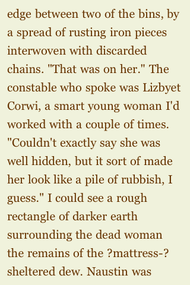

Real quotation marks become neutral quotation marks, as though reproducing typescript from an IBM Selectric. You don’t need to see the original to spot this one.

(This reader software is so dumb it breaks a line before a quote mark.)
Thin spaces between dots in an ellipsis become question marks.
(Ellipsis characters elsewhere in the E-book are just rendered as three dots.)
Hyphens are mangled completely.
-
Soft hyphen, which shouldn’t be used in E-book copy (the display engine must handle hyphenation), is rendered as hyphen-space. Look for the word English here:

-
The common use, in desktop publishing, of a soft hyphen before a word to mean the word should not be hyphenated comes through as a question mark (look for mattress-sheltered dew):
 -
Nonbreaking hyphen is rendered as hyphen then question mark (look for beat-up):

Character encoding is not the dumbest it could possibly be, as I would expect; it isn’t 1991-style US-ASCII, in that a word like GunterStrász is rendered well. But the name of one of the two cities in the book, Besźel, is a bit too weird for the file and comes out as Bes´zel (acute-accent character + z).